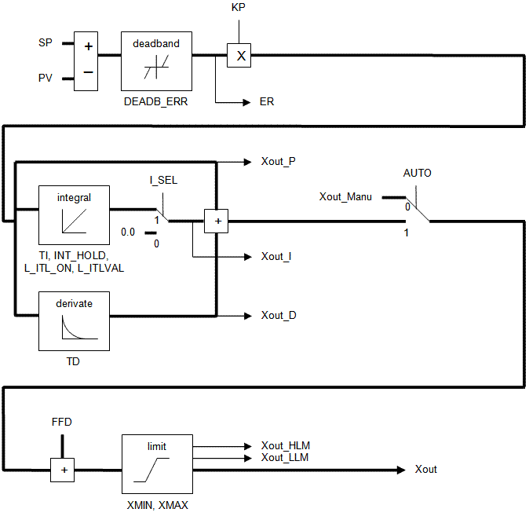
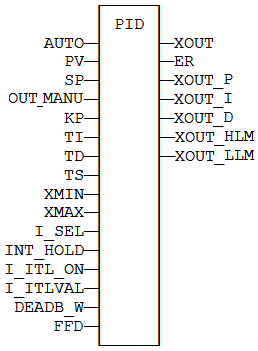
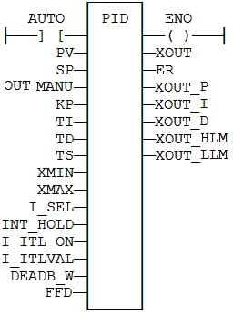

Function Block
PID loop.
|
Name |
Type |
Description |
|
AUTO |
BOOL |
TRUE = normal mode - FALSE = manual mode. |
|
PV |
REAL |
Process value. |
|
SP |
REAL |
Set point. |
|
Xout_Manu |
REAL |
Output value in manual mode. |
|
KP |
REAL |
Gain. |
|
TI |
REAL |
Integration time. |
|
TD |
REAL |
Derivation time. |
|
TS |
TIME |
Sampling period. |
|
XMIN |
REAL |
Minimum allowed output value. |
|
XMAX |
REAL |
Maximum output value. |
|
I_SEL |
BOOL |
If FALSE, the integrated value is ignored. |
|
INT_HOLD |
BOOL |
If TRUE, the integrated value is frozen. |
|
I_ITL_ON |
BOOL |
If TRUE, the integrated value is reset to I_ITLVAL. |
|
I_ITLVAL |
REAL |
Reset value for integration when I_ITL_ON is TRUE. |
|
DEADB_ERR |
REAL |
Hysteresis on PV. PV will be considered as unchanged if greater than (PVprev - DEADBAND_W) and less that (PRprev + DEADBAND_W). |
|
FFD |
REAL |
Disturbance value on output. |
|
Name |
Type |
Description |
|
Xout |
REAL |
Output command value. |
|
ER |
REAL |
Last calculated error. |
|
Xout_P |
REAL |
Last calculated proportional value. |
|
Xout_I |
REAL |
Last calculated integrated value. |
|
Xout_D |
REAL |
Last calculated derivated value. |
|
Xout_HLM |
BOOL |
TRUE if the output valie is saturated to XMIN. |
|
Xout_LLM |
BOOL |
TRUE if the output value is saturated to XMAX. |

It is important for the stability of the control that the TS sampling period is much bigger than the cycle time.
In LD language, the output rung has the same value as the AUTO input, corresponding to the input rung.
MyPID is a declared instance of PID function block.
MyPID (AUTO, PV, SP, XOUT_MANU, KP, TI, TD,
TS, XMIN, XMAX,
I_SEL, I_ITL_ON, I_ITLVAL, DEADB_ERR,
FFD);
XOUT := MyPID.XOUT;
ER := MyPID.ER;
XOUT_P := MyPID.XOUT_P;
XOUT_I := MyPID.XOUT_I;
XOUT_D := MyPID.XOUT_D;
XOUT_HLM := MyPID.XOUT_HLM;
XOUT_LLM := MyPID.XOUT_LLM;

ENO has the same state as the input rung.

MyPID is a declared instance of PID function block.
Op1: CAL MyPID (AUTO, PV, SP, XOUT_MANU, KP,
TI, TD, TS,
XMIN, XMAX, I_SEL, I_ITL_ON, I_ITLVAL,
DEADB_ERR, FFD)
LD MyPID.XOUT
ST XOUT
LD MyPID.ER
ST ER
LD MyPID.XOUT_P
ST XOUT_P
LD MyPID.XOUT_I
ST XOUT_I
LD MyPID.XOUT_D
ST XOUT_D
LD MyPID.XOUT_HLM
ST XOUT_HLM
LD MyPID.XOUT_LLM
ST XOUT_LLM